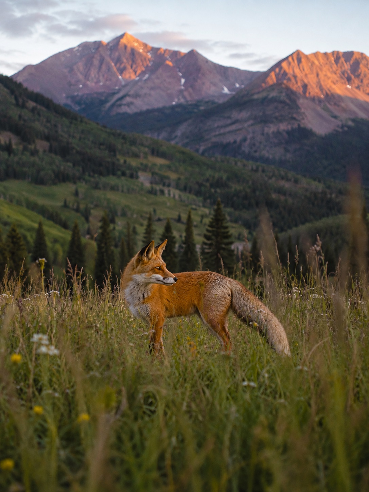

Look closer
Scout noticed what was happening around him. Good creative work starts the same way. We listen first. We look for the details others pass over. Then we find the idea that gives everything else direction.

The story behind the fox
Before Fox & Timber had a name or a mark, there was a fox standing quietly in a mountain meadow.
A wild encounter
Scout was not staged. He was not called into frame. He appeared on his own terms in the high country of Southwest Colorado. Evening light had reached the peaks while the meadow below settled into shadow. He moved through the grass with complete awareness of the world around him. Alert without being afraid. Curious without being careless. Entirely at home.
Nothing about him felt loud or forced. He did not need to announce himself. His presence did the work. Scout watched before he moved. When he moved, every step seemed to have a reason. That quiet confidence stayed with us long after he disappeared into the timber.
Fox & Timber grew from that feeling. We wanted to build a studio that pays attention before it acts. One that can find a clear path through complicated terrain. One that creates work with enough character to be noticed and enough discipline to feel like it belongs.

Why Scout matters
Scout noticed what was happening around him. Good creative work starts the same way. We listen first. We look for the details others pass over. Then we find the idea that gives everything else direction.
Scout never wasted motion. That became a standard for the studio. Every word should earn its place. Every visual choice should strengthen the system. Every piece should support the larger story.
A fox reads changing ground and finds another way forward. A strong brand does the same. It stays recognizable as it grows. It can enter new places without losing the thing that made it distinct.
Fox & Timber
The fox is Scout. He represents awareness, independence and resourcefulness. He is curious enough to explore and careful enough to understand the ground beneath him.
The timber is the place that shaped the company. It stands for patience, structure and roots. It is the quiet strength behind the work. The mountains connect them both and keep the studio tied to Southwest Colorado even when the work travels far beyond it.
Together, Fox & Timber means clear thinking shaped by wild places. It means knowing where you come from while staying ready for what is ahead.
From moment to mark
The first drawing was not meant to turn Scout into a mascot. It was meant to preserve what he represented. His profile became the center of the mark. The trees and mountains placed him back in the world where the idea began.
As the sketch became a finished vector, the lines grew cleaner but the meaning stayed intact. Scout remained at the center. Not as decoration. Not as a made-up character. As the real beginning of the company.
Scout’s shape and presence translated into the earliest version of the mark.
A refined symbol that carries Scout, the timber and the mountains forward together.
The heart of the studio
Scout reminds us to look closer, move thoughtfully and make every mark belong.
He is more than the fox in the logo. He is the reason the identity feels grounded instead of invented. He connects the studio to the place it came from. He gives the name a living origin. He reminds us that the best ideas do not always begin at a desk.
Sometimes they step out of the timber. They pause in the evening light. They wait for someone to notice.
See how we put that thinking to work